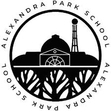

Overview
My educational background has been a journey of continuous learning and growth. I have always been passionate about acquiring knowledge and expanding my horizons. Throughout my academic career, I have pursued a diverse range of courses and disciplines, which has allowed me to develop a well-rounded understanding of various fields. My commitment to education has been driven by a desire to not only excel academically but also to gain practical skills that can be applied in real-world scenarios.
Secondary Education
Alexandra Park School
I completed my A-levels at Alexandra Park School where I studied Computer Science, Mathematics, and Business.

Higher Education
Queen Mary University of London
I am currently studying Computer Science at Queen Mary University of London. My studies focus on programming, algorithms, and computational thinking.